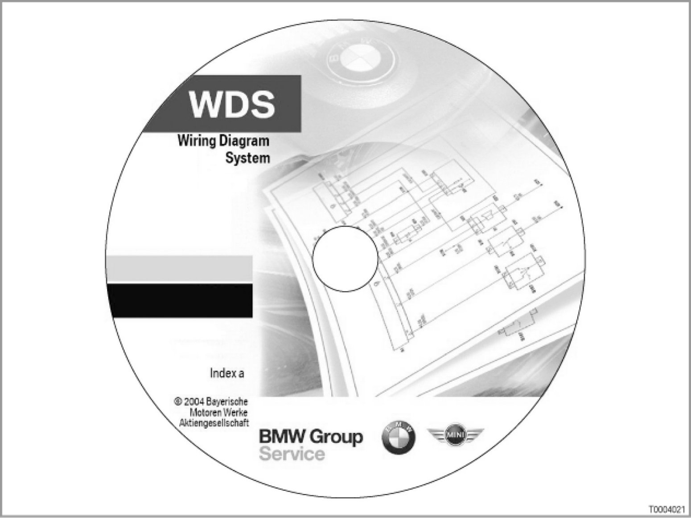

BMW Wiring Diagrams on DVD: Wiring Diagram System
00 07 04 (084)
BMW wiring diagrams on DVD: Wiring Diagram System
E46, E60, E61, E63, E64, E65, E66, E83, E85

Introduction
Wiring diagrams are the most important aid for diagnosis.
They are displayed in the BMW diagnostic system (on DISplus and on GT1).
Since the DIS (Diagnostic and Information System) BMW diagnostic system was introduced in 1994, the dealer organization has requested that the wiring diagrams be displayed on a commercially available PC. For a long time, this was not possible due to technical reasons. The newly developed BMW Wiring Diagram System (WDS) now finally allows us to fulfil the dealer organization's request. All current wiring diagrams from the BMW diagnostic system can now also be displayed on a commercially available PC using Microsoft Internet Explorer.
The BMW Wiring Diagram System is supplied on a DVD. The WDS DVD contains exactly the same wiring diagrams as the DIS BMW diagnostic system. The structure and the appearance of the wiring diagrams are also the same. This means that orientation is easy, because the DIS BMW diagnostic system is well known.
Advantage of the WDS DVD: The staff in the workshop (mechanics, vehicle electricians and mechatronicians) can all look at the wiring diagrams if all the DIS testers are already in use.
The first WDS DVD will be supplied shortly after DIS CD 37 is published in March 2004.
[System overview...]
The WDS DVD will be updated four times a year.
The WDS DVD contains the following diagrams:
- Wiring diagrams
- Connector views
- Pin assignments (for all control units with more than 8 pins)
- Installation locations
Small symbols in front of the file name indicate whether this file contains a wiring diagram, a connector view, pin assignments or installation locations.
This first WDS DVD contains the aforementioned diagrams for the following series:
- E46
- E60, E61
- E63, E64
- E65, E66
- E83, E85
All the information mentioned above is available in the following languages:
- German
- English
- US English
- French
- Italian
- Dutch
- Portuguese
- Swedish
- Spanish
Note: The WDS DVD does not replace the wiring diagrams on the DIS CD.
For technical reasons, the WDS DVD is released a short time after the DIS CD.
System requirements
The WDS DVD has the following system requirements:
- Computer
The minimum computer requirements are:
- RAM: 32 MB RAM
- Hard disk space: 13 MB
- Drive: for DVD
- Graphics card: minimum resolution 800x600 pixels
- Monitor
Resolution: minimum 800x600 pixels
- Printer
The system wiring diagrams can be printed from any printer set up in Windows.
- Operating system
The BMW Wiring Diagram System runs on the following operating systems:
- Windows 2000
- Windows NT 4.0 SP4 or later
(SP4 = Service Pack 4. E.g. Windows NT has SP6 or later, as SP4 was a requirement of Microsoft for year 2000 compatibility)
- Windows XP
- Internet Browser
- Microsoft Internet Explorer 5.5 or later
- Javascript and CSS enabled
(CSS = Cascading Style Sheet, a type of layout template for html files)
- Java functions enabled
if using SUN Java Environment: version 1.4.1 or later
- Java applet scripting enabled
- Adobe SVG Plug-in 3.0 or later installed
(SVG = Scalable Vector Graphic, i.e. program for zooming on graphics) [more...]
Note: A system test can be run on the computer under "Technical prerequisites".
The "Tech. prerequisites" button is on the right-hand side of the lower toolbar in the "Model-Series selection" screen. Clicking on this button opens an overview of the system requirements.
Use the "Start system test" link (left-hand column, center) to check whether the computer fulfils all the system requirements.
System functions
The BMW Wiring Diagram System allows you to perform the following functions:
- Zoom
- Search
- Select language
Zooming
In contrast to in the BMW diagnostic system, it is possible to zoom in on large wiring diagrams.
Instead of having to scroll to the left and right or up and down by a fixed amount, the zoom allows the view to be made larger or smaller.
It is possible to select various views, ranging from the system overview to the smallest detail. This allows you to get a clearer overview of the systems.
Please refer to the "Operation" section.
Searching
The BMW Wiring Diagram System allows you to search for specific components etc. (free text search: enter the components and start the search).
Please refer to the "Operation" section.
Languages
You can choose your desired language from a selection.
Please refer to the "Operation" section.
Printing
The wiring diagrams (connector views, pin assignments, installation locations) in the display field (on the right-hand side of the screen) may also be printed out.
Please refer to the "Operation" section.
Operation
The WDS DVD has a Windows user interface. This means that the WDS DVD is "familiar from the outset", principally because the structure of the wiring diagram is already known from the DMW diagnostic system.
However, here are a few details about:
- Ordering
- Installation
- Starting the WDS DVD in Explorer
- Selecting the language
- Selecting the model series
- Searching
- Zooming
- Printing
Ordering
The WDS DVD is included in the multimedia payment for the BMW diagnostic system updates. An online application is planned for internal use at BMW.
Installation
The WDS DVD does not need to be installed; it runs from the DVD in the browser. Only the Adobe SVG Plug-in needs to be installed for this (i.e. to display the wiring diagrams).
[more...]
Starting the WDS-DVD in the Internet browser
Start the WDS DVD as follows:
1. Switch on and boot up the PC.
2. Insert the WDS DVD into the PC's DVD drive. Close the drive.
The DVD is automatically read.
The "WDS Wiring Diagram System" start page appears.
Starting the WDS DVD in Internet Explorer
If the WDS DVD is not read automatically, if can be started manually via Windows Internet Explorer as follows:
1. Open Windows Internet Explorer.
2. Double click on the DVD drive in Windows Internet Explorer.
3. Search for the following file in the "Durchsuchen" ("Search") menu: index.htm.
4. Double click on the "index.htm" file. The WDS DVD is read.
The "WDS Wiring Diagram System" start page appears.
Selecting the language
Click on the language you require on the "WDS Wiring Diagram System" start page.
The "Baureihenauswahl" ("Model-Series selection") screen appears with the following prompt:
"Bitte wahlen Sie eine Baureihe." ("Please select a model series.")
Selecting the model series
Click on the desired model series in the "Baureihenauswahl" ("Model-Series selection") screen.
The window for the desired model series is opened.
- The list of contents is on the left (= the "navigation tree").
- The "Hinweise zu Bedienung und Navigation" ("Operation and navigation notes") are on the right in the WDS DVD.
Searching
You can search by choosing the model series and making a selection in the navigation tree or by typing in a description (text search, e.g. for "window").
- Searching by choosing the model series and making a selection in the navigation tree
1. Click on the "Baureihen" ("Model series") button on the left of the upper toolbar.
The "Baureihenauswahl" ("Model-Series selection") screen is opened.
2. Click on the desired model series. The window for the desired model series is opened. The list of contents is on the left-hand side of the window (= the navigation tree).
3. Click on the "+" button next to an entry. The subdirectory is opened.
4. Click on the required document. The document is opened.
- Text search
To perform a text search, you must type the term you are searching for into the input field. Partial terms will also be found. For example, if you enter "windscreen", occurrences of "windscreen wiper" will also be found.
There are two different ways of performing a text search:
- The required term is searched for in the entire navigation tree.
- The required term is searched for in a wiring diagram.
To search for text in the navigation tree, proceed as follows:
1. Type the search term into the input line at the left of the lower toolbar.
2. Click on the "Suchen" ("Search") button.
The text search is run. The text search also finds keywords with similar spelling to the term you entered.
Hits are underlined in bold in the contents list (= navigation tree).
3. Click on the "+" button next to the hit. The subdirectory is opened. Click on the required document. The document is opened.
4. If there are several hits, click on the "Weiter" ("More") button to display more hits.
Start the text search in a wiring diagram using the context menu (right mouse button).
[more...]
Zooming
You can toggle between the system overview showing all the components and views of individual details of the wiring diagram using the zoom function as follows:
- To zoom in: Click on the magnifying glass symbol with the plus sign in the center of the lower toolbar.
(Or hold down the "Ctrl" key.)
Click on the wiring diagram.
The view is enlarged and more detail can be seen.
- To zoom out: Click on the magnifying glass symbol with the minus sign in the center of the lower toolbar.
(Or hold down the "Ctrl" and "Shift" keys simultaneously.)
Click on the wiring diagram.
The view is made smaller and there is less detail, which gives a better overview of the system.
Printing
1. Click on the "Druck" ("Print") button on the left of the upper toolbar. The "Drucken" ("Print") window appears. Select the printer, pages, number of copies, etc. as you normally do in Windows.
2. Click on the "Drucken" ("Print") button in the "Drucken" ("Print") window.
The area displayed (on the right-hand side of the screen) is printed.
A complete overview of all the buttons is enclosed.
Notes for service staff
- General notes: ---
- Diagnostics: ---
- Coding/programming: ---
- Car and Key Memory: --- ---
US national version
US English is available.
Subject to change.